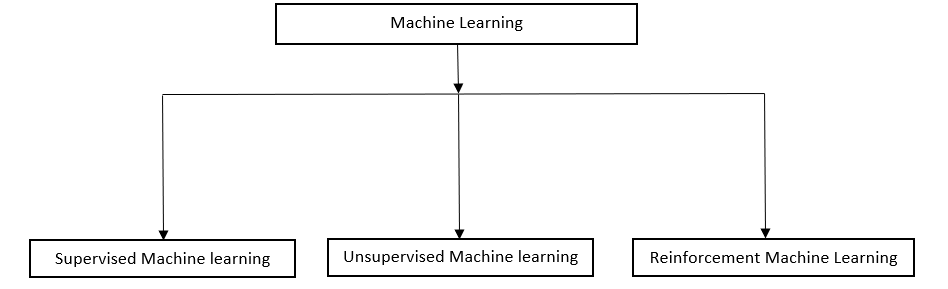
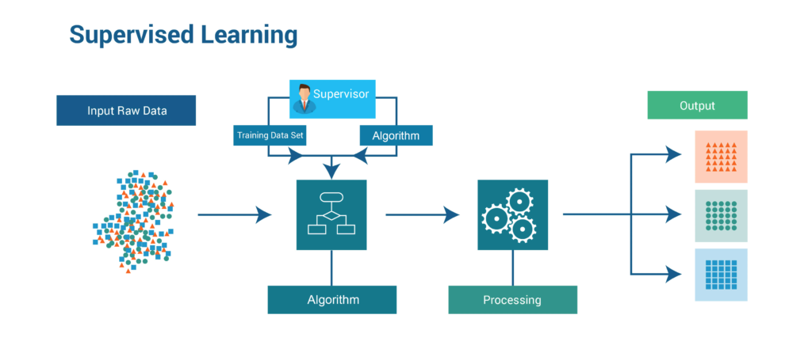
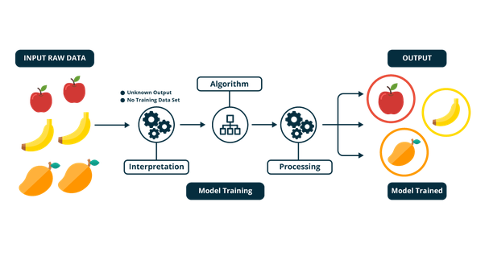
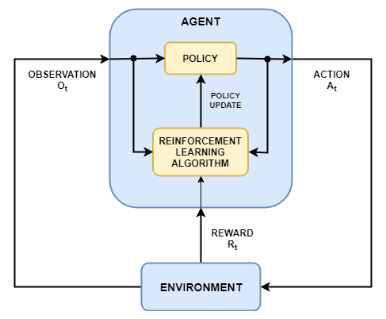

जैसा कि हम जानते हैं कि हर एक दिन में डेटा लगभग 2.5 क्विंटल (quintillion) बाइट्स बढ़ जाता है, और यह आमतौर पर बढ़ने वाला है। वर्ष 2020 में, यह 1.7MB से अधिक डेटा है जो हर उस व्यक्ति के लिए हर सेकंड बढ़ेगा जो पृथ्वी पर हैं। इसलिए, बड़ी मात्रा में डेटा (जिसे बड़ा डेटा कहा जाता है) को बनाए रखने के लिए, हम मशीन लर्निंग का उपयोग करते हैं। आज Techhindi4u ब्लॉग में हमें मशीन लर्निंग और उसके प्रकार और कुछ कई बिंदुओं पर चर्चा करनी चाहिए जिन पर चर्चा की जाती है
- परिभाषा
- मशीन सीखने के प्रकार
- लाभ
- नुकसान
मशीन लर्निंग क्या है?
मशीन लर्निंग के नाम के अनुसार, मशीन कैसे सीख सकती है कि कैसे अनुभव, निर्देश, डेटा में पैटर्न बनाते हैं और भविष्य में सबसे अच्छे निर्णय की भविष्यवाणी करते हैं। मशीन लर्निंग का मुख्य उद्देश्य कंप्यूटर को मानव सहायता में हस्तक्षेप किए बिना स्वचालित रूप से सीखने की अनुमति देना है।

मशीन को प्रशिक्षित किया जा सकता है जो डेटासेट से पैटर्न का अनुसरण करता है और मशीन को प्रशिक्षित करने के बाद इसका परीक्षण किया जा सकता है। जब प्रशिक्षित और इसके द्वारा लागू किया गया परीक्षण प्रशिक्षित अनुपात में सटीकता पाता है: परीक्षण = 6: 4 या 7: 3 का अर्थ है कि प्रशिक्षित डेटा 60% या 70% होना चाहिए और परीक्षण डेटा 40% या 30% डेटासेट होना चाहिए । इसके लिए हम मशीन लर्निंग के एल्गोरिदम को लागू कर सकते हैं। लागू किए गए एल्गो के बाद यह किसी भी डेटासेट की भविष्यवाणी करता है जो इन समान पैटर्न का अनुसरण करता है।
उदाहरण के लिए:
तस्वीरों के संग्रह से, एक तस्वीर को बेतरतीब ढंग से चुना जाता है और मशीन हमें बताती है कि तस्वीर कुत्ते या बिल्ली या कुछ और है। आपको पता होगा कि मशीन हमें कैसे बताती है कि फोटो में कुत्ता, बिल्ली या कुछ और है। सबसे पहले, मशीन को फोटो से पहचानने के लिए कुछ पैटर्न को प्रशिक्षित किया जा सकता है। इसके बाद इसे आसानी से पहचाना जा सकता है कि यह कुत्ते, बिल्ली या किसी और चीज की फोटो है।

मशीन लर्निंग के लाभ (advantages):
1. Easily identifies trends and patterns
2. No human intervention needed (automation)
3. Continuous Improvement
4. Handling multi-dimensional and multi-variety data
5. Wide Applications
मशीन लर्निंग के नुकसान (disadvantages):
1. Data Acquisition
2. Time and Resources
3. Interpretation of Results
4. High error-susceptibility
मशीन लर्निंग के प्रकार:
मशीन लर्निंग के प्रकार इस प्रकार हैं:

सुपरवाइज्ड मशीन लर्निंग एल्गोरिदम:
नाम के अनुसार सुपरवाइज्ड लर्निंग मशीन को डेटासेट से इनपुट और आउटपुट द्वारा सीखने के लिए पर्यवेक्षण किया जा सकता है। पर्यवेक्षित शिक्षण को इनपुट और आउटपुट दोनों में प्रशिक्षण डेटा को वर्गीकृत किया जा सकता है और यह डेटासेट पर वर्गीकरण अहंकार को लागू करता है (जैसे कि नैवे बाय्स एल्गो)। डेटासेट पर इनपुट और आउटपुट दोनों की तरह एल्गोरिथ्म को लागू किया जा सकता है और सीखने के एल्गो को लागू किया जाना चाहिए और पर्यवेक्षित मॉडल बनाना चाहिए।
Unsupervised मशीन लर्निंग एल्गोरिदम:
Unsupervised का मतलब है कि इसने सलाह नहीं दी है। Unsupervised मशीन लर्निंग में, हमारे पास केवल क्लस्टर के रूप में इनपुट हो सकते हैं और इसे डेटासेट की मदद से प्रशिक्षित किया जा सकता है जिसमें क्लस्टर हैं। इसके पास केवल इनपुट है ताकि, यह पता न चल सके कि अगले चरणों में क्या हुआ है। यह केवल डेटा को विभिन्न समूहों में वर्गीकृत कर सकता है और डेटा के विश्लेषण के बाद इसे वर्गीकृत कर सकता है। यह वर्गीकृत अल्गोस (जैसे के-मीन) का उपयोग कर सकता है।
सुदृढीकरण (Reinforcement) मशीन सीखने के एल्गोरिदम:
रेनफोर्समेंट मशीन लर्निंग वह सीख है जिसमें एक एजेंट की आवश्यकता होती है जो पर्यावरण में कार्यों या गतिविधियों को करता है और कार्यों या गतिविधियों को करने के बाद उसे इनाम और वातावरण मिलता है। इसमें एजेंट अपना कार्य सीख और कर सकता है। इस एल्गोरिदम को रिवॉर्ड / पॉलिसी एक्टिविटीज भी कहा जाता है, यानी पेनल्टी या रिवार्ड मिलने के बाद, यह पॉलिसी को ओवर एरर बनाता है। इस तरह से एजेंट सीख सकता है कि कार्य को कैसे करना है।
